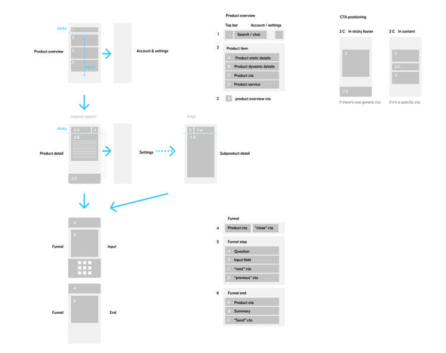
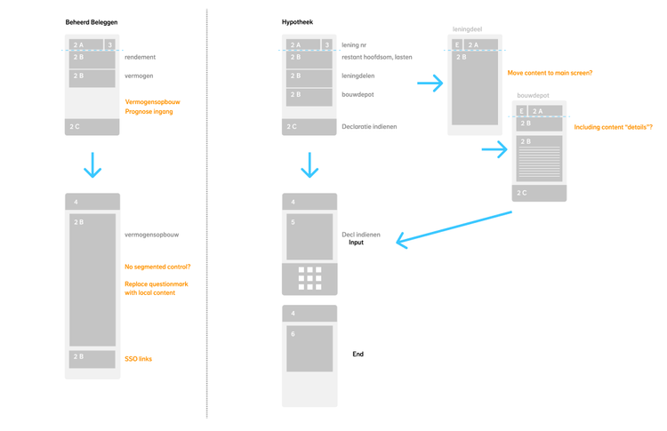

making things simple
Analysing and categorising all content was the first step. I mapped it onto an approach dividing the why, the how and the what. First you get the overview of the product. Secondly its current state and lastly you can "use" the product via funnels bringing you back to the second level. The second step was mapping the content to use cases. This was setting us up towards a new structure that would be scalable.
 With so many products, it was easy to get lost in the app — especially since they had little in common beyond being financial. I introduced a simple structural blueprint that every piece of content had to follow. This made navigation predictable: the top level held the full list, the second level focused on individual products, and the third level contained any funnels within those products. No matter where you were, home was never more than two steps away.
With so many products, it was easy to get lost in the app — especially since they had little in common beyond being financial. I introduced a simple structural blueprint that every piece of content had to follow. This made navigation predictable: the top level held the full list, the second level focused on individual products, and the third level contained any funnels within those products. No matter where you were, home was never more than two steps away.
new information architecture
So does it work? Do people get it? We set up moderated usability tests and found all involved were able to move around. They accessed various products and easily completed tasks related to those. Having this confirmation, engineering was able to start buillding the app. We continued user research -this allowed us to go deeper into what users expected and how they behaved. 
prototyping
Users responded surprisingly well to exploring the new environment. Not only did they feel at ease with the structure — many assumed this kind of architecture should be standard in any insurance app. It made perfect sense to them. In fact, some even pitched the concept back to us, as if we needed convincing.